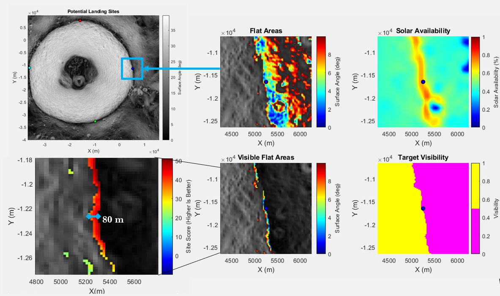

Lunar Navigational Beacons
Project with NASA MSFC working on the feasibility of lunar navigational beacons
Using Beacons for Navigation
During an internship with NASA Marshall Space Flight Center, I helped with determining the feasibility of using lunar navigational beacons to support future missions as part of the Artemis program. Sample return missions, which would retrieve samples from inside permanently shaded craters on the lunar south pole hoping to find water ice, would benefit from the positional data gathered by a set of navigational beacons. Working with a team of interns we studied the feasibility of these beacons, culminating in a final proposed design.
We worked through two main potential solutions, which main difference was the deployment method of 3+ beacons to the surface around a crater. The first design deploys each beacon to the surface from orbit-to-ground, independent of each other. The second lands a single craft from orbit, where several beacons are then deployed from the main landing craft to their desired locations (ground-to-ground). My work focused heavily on identifying potential landing locations and the navigational system which would deploy the ground-to-ground beacons.
PILOT
To help understand requirements for the ground-to-ground system, I worked on designing a software package in MATLAB which is used to find the optimum trajectory between two locations on the lunar surface. PILOT (Program for Identifying Lunar Optimum Trajectories) first determines ideal landing locations and then finds the corresponding optimal thrust control to pilot each beacon for a soft-landing at those locations. The title image above summarizes this process by showing potential landing sites and the corresponding trajectories to reach them on Shackleton Crater.
Trajectory Optimization
Since assuming a impulsive burn would be inappropriate given the short time in flight, the burns were considered to be finite which increased the difficult in determining the required performance. Since the goal was to determine how much fuel this system would need given a estimated dry mass, the results for the optimal trajectory will give good estimate on the performance required. The nonlinear problem (non linear due to mass changes) was converted into a convex optimization problem provides and was able to provide a global optimal solution for the control of each beacon given a constant thrust. Below is a sample trajectory and its corresponding optimal control.
Since there is a constraint on the thrust provided, the solution is represented by a bang-bang solution, full thrust at the beginning and the end of the trajectory. There are additional constraints on the landing angle and final velocity at the surface which would provide each beacon a soft and precise landing.
Landing Site Selection
As part of the landing site selection, images captured from the Lunar Reconnaissance Orbiter (LRO) was used to create a topographic map in MATLAB. This was then used to identify locations which met the following criteria:
- Must be relatively flat (slope < 10 deg)
- Must be able to see into the crater.
- Must have high solar availability.
The flatness of the surface was found simply using the topographic data to find the slope of the surface, and was included as a constraint to ensure a safe landing to prevent the beacon from tipping over. The view into the crater was found using a viewshed of the crater, given a location at the bottom and a height of 5 ft. for the antenna. The solar availability was calculated using solar availability maps for the lunar south pole, derived by NASA, to identify locations along the rim that would either have a permanent or almost permanent view of the sun. There are few locations along the rim of Shackleton Crater that meet all of these criteria and those that do were graded using a cost function to help identify the best landing locations for the beacons.
It is important to identify what locations have view access into the crater, since these beacons would be most beneficial for missions that descend into the crater. This view analysis from PILOT below highlights how the beacons located at various locations around the rim have different view access. Ideally, the sample return mission would target locations in the crater that is able to see most of the beacons.

Final Design
In the end, the ground-to-ground beacon system was determined to be inferior to the orbit-to-ground, which deployed each beacon in orbit rather than after landing a larger craft. The main driving factor is the mission requirements resulting from the size and shape of Shackleton Crater. The distance each beacon would have to travel and the small variable landing regions along the rim puts high requirements on the propulsion and control systems, enough that the initial landing craft which contains all the beacons would be just as heavy as four separate landing systems. Since they would all be identical, it would reduce overall complexity and development costs as well as provide additional flexibility as each beacon is not limited to a radius around the landing craft.
This project helped me improve my technical skills, but gave an important insight into the realities of projects by making changes away from where I spent effort and my work because of mission requirements. The PILOT program was adapted to find the optimal control for a soft-landing only for the orbit-to-ground beacon system (removing the launch phase) and the landing site identification and selection system was applicable to both systems.
Using deployable ground beacons would be much more applicable to uses where the beacons do not have to travel far from the landing craft, and where they don't require precise landing locations/conditions. This might work on applications where a large, human lander and their resulting extravehicular activities would benefit from a ground based "GPS" system in the area.